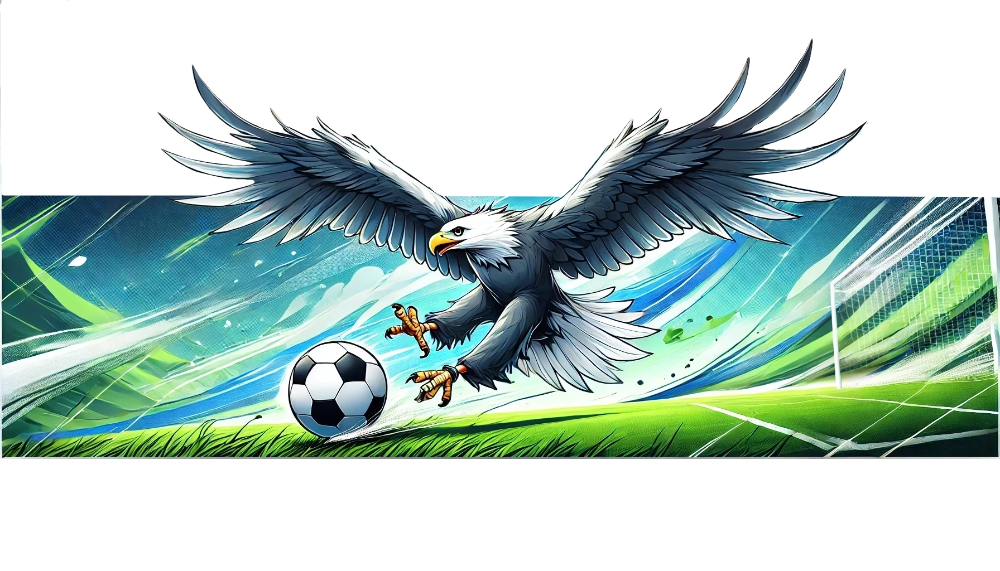

Nasz klub
Orły to my!
W 2018 znaleźliśmy się na piłkarskiej mapie województwa kujawsko-pomorskiego. Łączy nas piłka, pasja do sportu i rywalizacji. Z roku na rok podnosimy swoje umiejętności na boisku, ale także rozwijamy organizacyjnie. Rozwijamy struktury naszego małego klubu. Od 2022 szkolimy najmłodszych adeptów piłkarskiego rzemiosła. To dopiero początek!
Zapraszamy na stadion przy ulicy Zabytkowej 8 w Przyłękach i do śledzenia naszego Facebooka.
